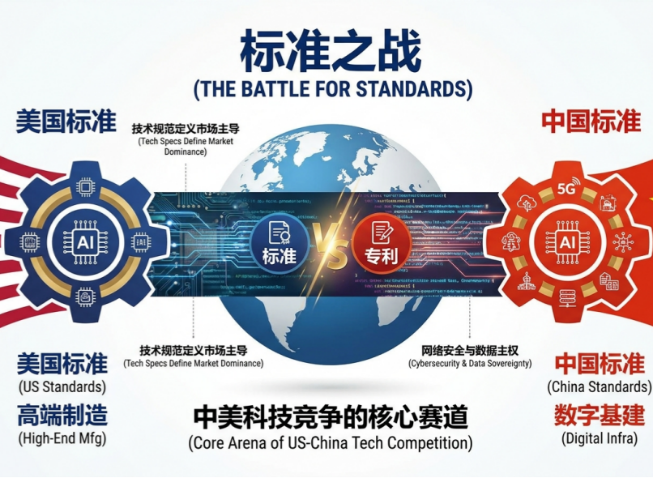
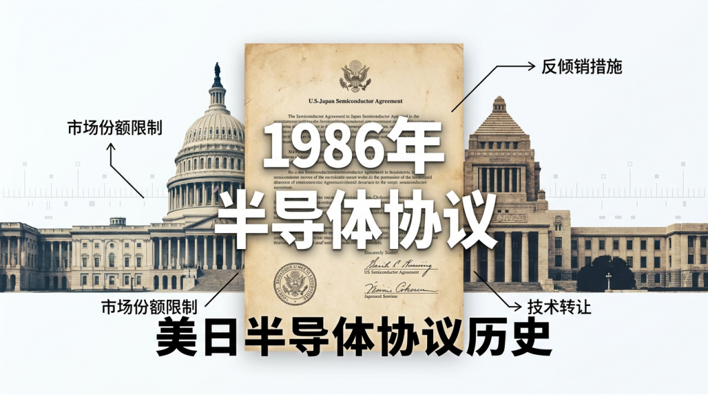
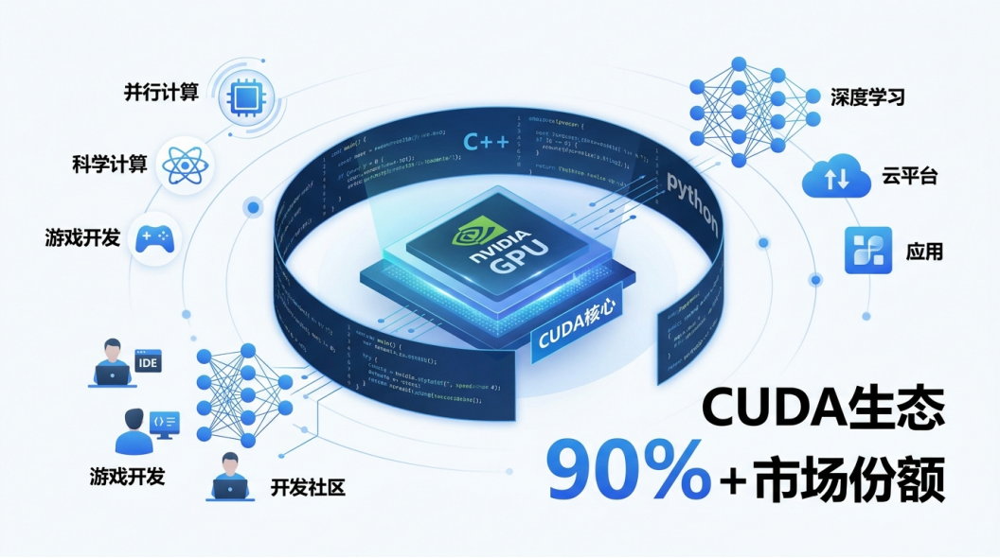
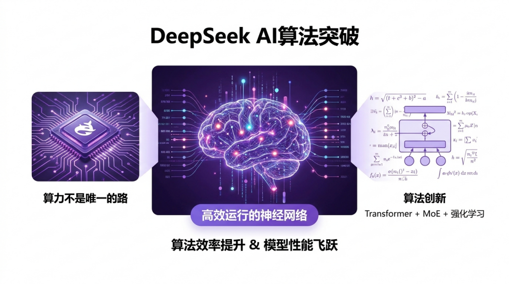
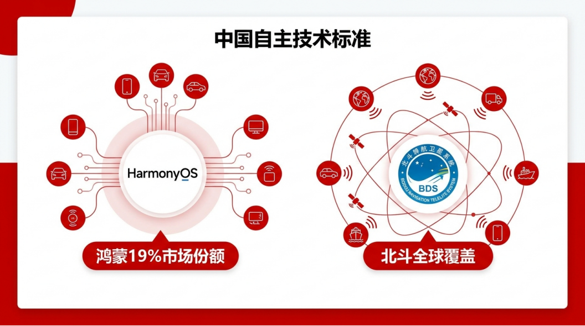
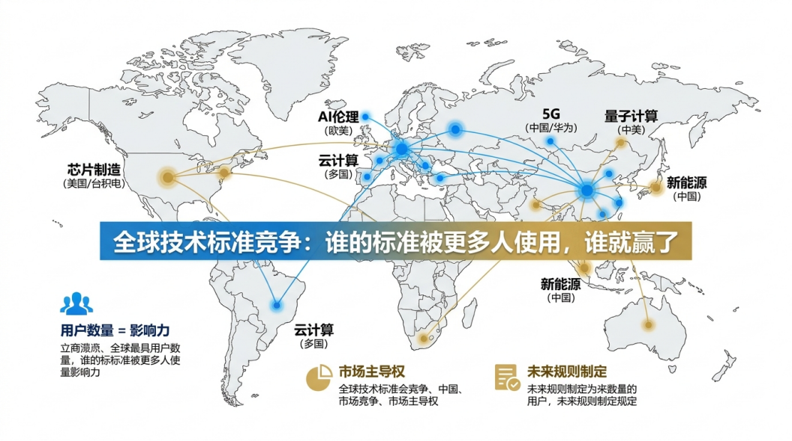
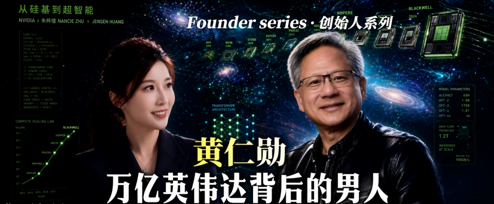
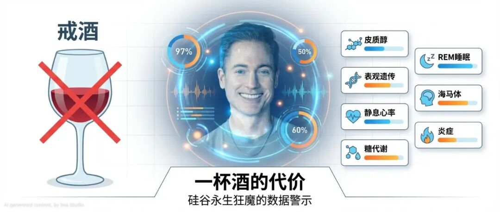

📡 中美科技战真正的战场，不是你以为的那个
The Real Battlefield of US-China Tech War: Standards

你觉得中美科技technology[tɛkˈnɑlədʒi] n. 科技战，打的是什么？
芯片chip[tʃɪp] n. 芯片？5G5G[faɪv dʒi] n. 5G？AI模型的算力computing[kəmˈpjutɪŋ] n. 算力？
我认为，这场战争真正的战场，是两个字：标准standard[ˈstændərd] n. 标准。

谁的技术标准被更多国家采用adoption[əˈdɑpʃən] n. 采用，谁就赢了。而这场关于标准的战争，正在进入最关键的阶段phase[feɪz] n. 阶段——而且普通人完全没有意识到。


1986年9月2日，美国和日本签署了一份文件——《美日半导体semiconductor[ˌsɛmikənˈdʌktər] n. 半导体协议》。
这份协议的内容很简单：美国以倾销为由，对日本芯片征收高额关税tariff[ˈtærɪf] n. 关税，同时要求日本开放国内市场，保证外国芯片在日本的市场份额达到20%。

日本半导体产业确实在随后几年失去了全球主导dominance[ˈdɑmɪnəns] n. 主导地位。日立、NEC、东芝这些曾经叱咤风云的名字，逐渐退出withdraw[wɪðˈdrɔ] v. 退出了第一梯队。但与此同时，韩国三星、中国台湾台积电在这个空档期迅速崛起emergence[ɪˈmɜrdʒəns] n. 崛起，填补了日本留下的市场空白。
美国本想遏制curb[kɜrb] v. 遏制日本，最终却发现自己对整个东亚半导体产业链的依赖更深了。这是一个典型的 unintended consequence——意外后果consequence[ˈkɑnsɪkwɛns] n. 意外后果。你为了解决问题采取的措施measure[ˈmɛʒər] n. 措施，反而制造了更大的问题。
这是标准之战的经典悖论paradox[ˈpærədɑks] n. 悖论：当你用行政手段强行打破一个生态，你往往无法预测新的生态会在哪里生长出来。
日本当年的GDP峰值peak[pik] n. 峰值约为美国的70%，而且人口只有美国的三分之一。中国今天的经济体量已经逼近approach[əˈproʊtʃ] v. 逼近美国的80%，人口是美国的四倍多。更重要的是，中国拥有全球最完整的工业门类——联合国产业分类classification[ˌklæsɪfɪˈkeɪʃən] n. 分类中的全部工业门类，中国都有。


让我给你讲一个具体specific[spəˈsɪfɪk] adj. 具体的的例子。
你知道全球AI深度学习模型，有多少运行在英伟达的CUDA框架framework[ˈfreɪmwɜrk] n. 框架上吗？
CUDA不只是一套编程接口interface[ˈɪntərfeɪs] n. 接口，它是一个完整的开发生态。全球数十万AI研究者researcher[rɪˈsɜrtʃər] n. 研究者，从学生时代就开始学习CUDA；全球顶级AI论文，绝大多数的实验experiment[ɪkˈspɛrɪmənt] n. 实验代码基于CUDA运行；全球AI公司构建的技术栈，核心计算层都深度绑定bind[baɪnd] v. 绑定CUDA。
TensorFlow、PyTorch这些最流行的深度学习框架，底层都深度依赖depend[dɪˈpɛnd] v. 依赖CUDA。这意味着什么？
意味着即使有一天，中国芯片的性能做到了和英伟达同等水平，也面临一个远比硬件性能更难逾越的障碍barrier[ˈbæriər] n. 障碍：没有生态。
工程师不愿意切换switch[swɪtʃ] v. 切换——因为学CUDA花了三年，重新学一套体系要花多久？一个成熟mature[məˈtʃʊr] adj. 成熟的的AI工程师，其知识储备中有相当一部分是围绕特定框架和工具链建立的。让他迁移migrate[ˈmaɪɡreɪt] v. 迁移到一套全新的体系，学习成本是惊人的。
代码不愿意迁移——因为一个成熟的AI项目可能有几百万行代码，重写一遍的成本cost[kɔst] n. 成本是多少？大型AI系统的代码库往往经过数年的迭代iteration[ˌɪtəˈreɪʃən] n. 迭代和优化，其中包含了大量的性能调优技巧和工程经验。这些知识是隐性tacit[ˈtæsɪt] adj. 隐性的的，无法简单地通过自动化工具迁移。
整个AI开发的工作流，从数据预处理到模型训练到推理部署deploy[dɪˈplɔɪ] v. 部署，都是围绕CUDA建立的。数据加载、分布式distributed[dɪˈstrɪbjutɪd] adj. 分布式的训练、混合精度计算、模型压缩——每一个环节都有CUDA优化的最佳实践。

华为昇腾芯片在硬件性能上已经取得了长足进步，但它面对的真正挑战challenge[ˈtʃælɪndʒ] n. 挑战不是算力差距，而是生态差距。这才是最难翻越surmount[sərˈmaʊnt] v. 翻越的那座山。
这就是标准的威力power[ˈpaʊər] n. 威力：它不写在任何法律文件里，但它比任何关税都更有约束力。关税可以谈判，可以取消，但生态的惯性inertia[ɪˈnɜrʃə] n. 惯性一旦形成，几乎不可逆转。

这里是我觉得最值得深思的视角perspective[pərˈspɛktɪv] n. 视角——
中国的策略strategy[ˈstrætədʒi] n. 策略，不是正面硬刚，而是另立赛场。
DeepSeek的出现，是一个清晰的信号signal[ˈsɪɡnəl] n. 信号。
2024年底，DeepSeek发布release[rɪˈlis] v. 发布了V3模型。据公开信息显示，其训练成本约为五百万美元级别level[ˈlɛvəl] n. 级别。作为对比，训练GPT-4级别的模型，业内估算estimate[ˈɛstɪmeɪt] v. 估算成本在数千万到一亿美元之间。DeepSeek用不到行业平均成本十分之一的投入，做出了可以媲美rival[ˈraɪvəl] v. 媲美顶级闭源模型的产品。

当你买不到最贵的算力，你逼迫自己把算法algorithm[ˈælɡərɪðəm] n. 算法做得更高效。DeepSeek证明prove[pruv] v. 证明了一件事：算力不是唯一的路。在算法架构、数据效率、训练策略上的创新，可以在有限的硬件条件下实现突破breakthrough[ˈbreɪkθru] n. 突破。
这就像一个运动员，当他的训练条件受限时，他不得不研究更科学的训练方法，最终反而可能比那些条件优越superior[suˈpɪriər] adj. 优越的但依赖蛮力的对手走得更远。
更重要的是，中国有一个美国无法复制的优势advantage[ədˈvæntɪdʒ] n. 优势：数据规模和应用场景。
全球规模最大的中文互联网用户群体，全球最大的制造业场景，全球最大的医疗影像数据积累，全球最复杂的交通流量网络——这些数据，是AI训练的燃料fuel[fjuəl] n. 燃料。你可以禁芯片，但禁不了数据data[ˈdeɪtə] n. 数据。
美国在通用大模型上领先，但中国在垂直vertical[ˈvɜrtɪkəl] adj. 垂直的领域的AI应用上有着天然优势。因为中国拥有最丰富的工业场景、最复杂的城市交通、最多样化diverse[daɪˈvɜrs] adj. 多样化的的医疗病例。这些场景产生的数据，是训练专用AI模型的宝贵资源resource[rɪˈsɔrs] n. 资源。
如果中国在某些垂直领域domain[doʊˈmeɪn] n. 领域做出了全球最好的AI——
比如工业机器人的视觉识别、医疗影像的辅助诊断diagnosis[ˌdaɪəɡˈnoʊsɪs] n. 诊断、复杂交通系统的智能调度——
那么那些需要这些技术的国家nation[ˈneɪʃən] n. 国家，会用谁的标准，就不一定了。
鸿蒙操作系统就是一个活生生的例子example[ɪɡˈzæmpəl] n. 例子。2025年，鸿蒙在中国智能手机市场的份额share[ʃɛr] n. 份额达到约19%，超过了iOS。这不是因为它比iOS更好用，而是因为当谷歌服务service[ˈsɜrvɪs] n. 服务无法使用时，中国必须有自己的操作系统标准。而一旦这个标准建立起来，它就会自我强化reinforce[ˌriɪnˈfɔrs] v. 强化——开发者开始为鸿蒙开发应用，用户因为应用丰富而选择鸿蒙设备，更多开发者加入，形成正循环。

北斗导航navigation[ˌnævɪˈɡeɪʃən] n. 导航系统是另一个例子。当GPS可以在关键critical[ˈkrɪtɪkəl] adj. 关键的时刻被关闭，中国建立了自己的全球定位系统。今天，北斗已经在全球一百多个国家得到应用，这些国家的交通、农业agriculture[ˈæɡrɪkʌltʃər] n. 农业、救灾系统开始依赖北斗，而不是GPS。
标准的争夺contest[kənˈtɛst] n. 争夺，从来不是单纯的技术竞赛，而是应用场景的竞争。谁解决了更多人的实际问题，谁的标准就会被更多人采用adopt[əˈdɑpt] v. 采用。

这场战争已经渗入了你的日常，只是你未必察觉perceive[pərˈsiv] v. 察觉。
你所在的公司，要不要采购procure[prəˈkjʊr] v. 采购国产云服务和国产AI模型？这不仅是成本问题，更是供应链安全security[sɪˈkjʊrɪti] n. 安全问题。当国际关系紧张时，依赖reliance[rɪˈlaɪəns] n. 依赖单一来源的技术栈可能会让你在一夜之间陷入被动。
你的职业发展，要不要掌握master[ˈmæstər] v. 掌握一套国产技术栈？这不仅是技能skill[skɪl] n. 技能问题，更是未来十年你在哪个生态里吃饭的问题。如果你只会CUDA，而未来的趋势是多元化diversified[daɪˈvɜrsɪfaɪd] adj. 多元化的的计算平台，你的技能组合是否需要更新？
你选择进入哪家公司，它的核心技术是绑定哪个阵营camp[kæmp] n. 阵营的？是深度绑定CUDA生态的，还是在积极拥抱国产替代方案alternative[ɔlˈtɜrnətɪv] n. 替代方案的？这个选择，可能会影响你未来五年的职业轨迹trajectory[trəˈdʒɛktəri] n. 轨迹。
这些不是宏观macro[ˈmækroʊ] adj. 宏观的叙事，是你下一份工作、下一个项目、下一个职业决定的背景。
读懂这场战争的逻辑logic[ˈlɑdʒɪk] n. 逻辑，你就读懂了自己所处位置的坐标。
标准之战的残酷之处在于：它不像关税战那样轰轰烈烈，但它一旦分出胜负，结果就是不可逆irreversible[ˌɪrɪˈvɜrsəbəl] adj. 不可逆的的。当绝大多数开发者和企业都习惯了某一种技术栈，再想切换，成本将是指数级exponential[ˌɛkspəˈnɛnʃəl] adj. 指数级的的。
所以，这场战争最关键的时刻moment[ˈmoʊmənt] n. 时刻，不是现在，而是未来三到五年。在这三年里，哪些标准会被更多人采用，哪些生态会建立起足够的惯性，将决定未来十年的格局landscape[ˈlændskeɪp] n. 格局。
中美科技战，最终ultimate[ˈʌltɪmɪt] adj. 最终的打的不是谁的芯片更快。
打的是：谁的技术被更多人使用，被更多国家信任trust[trʌst] v. 信任，被更多企业依赖。
赢得这场战争的，不一定是做出最先进advanced[ədˈvænst] adj. 先进的产品的那个人。
而是做出了最多人愿意用的标准norm[nɔrm] n. 标准的那个人。

这就是为什么，在这个时代理解comprehend[ˌkɑmprɪˈhɛnd] v. 理解技术，不只是技术人员的事，是每个人的事。
The real battlebattle[ˈbætəl] n. 战役 isn't about who builds the fastest chip. It's about who sets the standard the world runs on.
黄仁勋：从洗碗工到AI King——命运fate[feɪt] n. 命运的绕圈

一杯酒的代价price[praɪs] n. 代价：硅谷"永生狂魔"用数据告诉你为什么该戒酒
